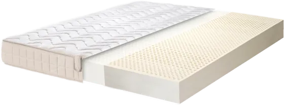
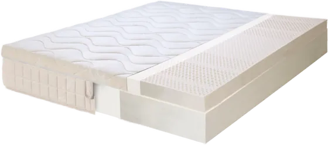
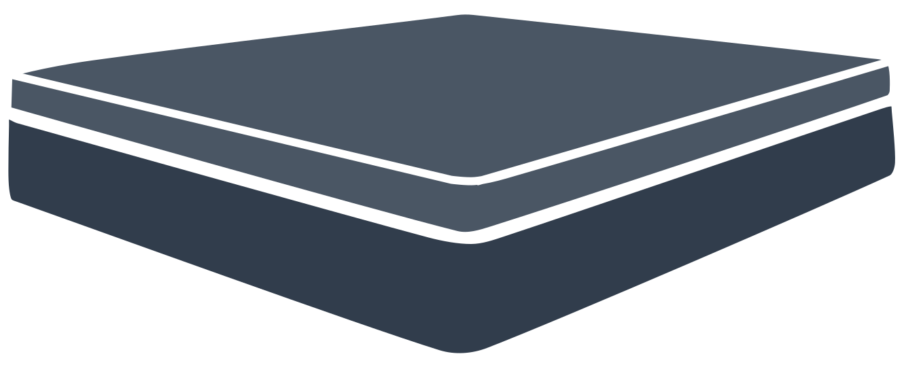
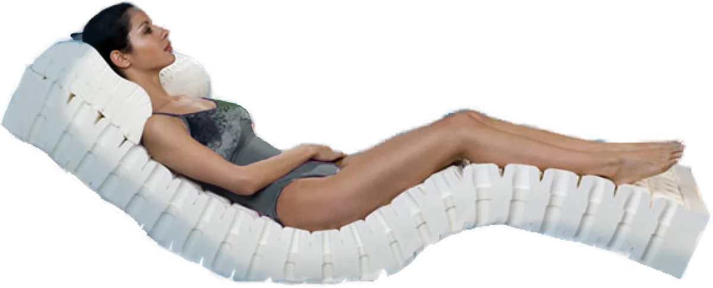
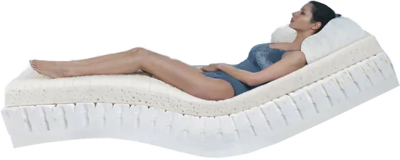
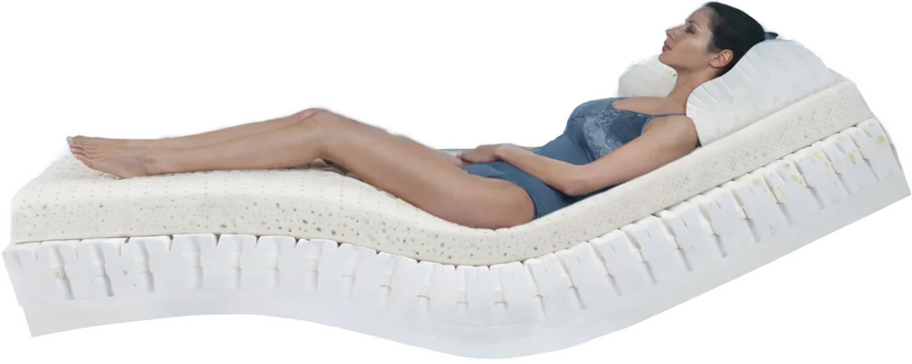
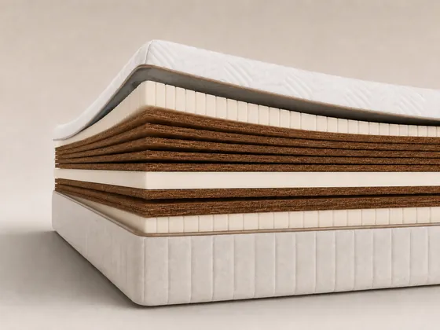
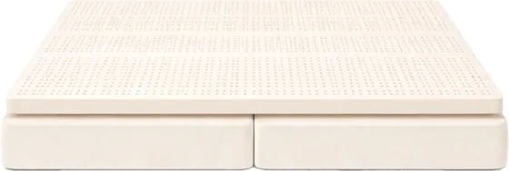
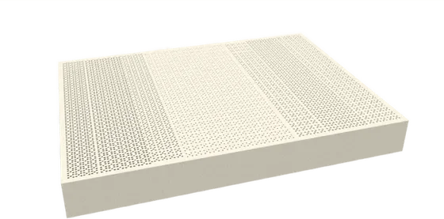
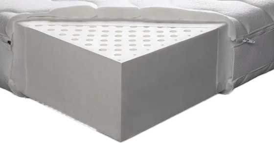

<!-- Divine DunlopDreams Collection 3.3.0 · mattress · generated by divine-collection/build.mjs: edit src/data.mjs, not this file -->
<div class="ddc ddc--mattress">
<div class="ddc__in">
<div class="ddc__hd">
<div class="ddc__ht"><h2 class="ddc__q">Which 100% latex mattress is right for you?</h2><p class="ddc__lede">Eight latex mattresses, one material: natural Dunlop latex. Each exists for a reason. Open a model to set its size, firmness, depth and cover.</p></div>
<ol class="ddc__path"><li class="ddc__st ddc__st--now"><span class="ddc__st-n">1</span><span class="ddc__st-x"><span class="ddc__st-t">Pick your model</span><span class="ddc__st-w">here</span></span></li><li class="ddc__st"><span class="ddc__st-n">2</span><span class="ddc__st-x"><span class="ddc__st-t">Set size, firmness, thickness &amp; cover</span><span class="ddc__st-w">on the model page</span></span></li><li class="ddc__st"><span class="ddc__st-n">3</span><span class="ddc__st-x"><span class="ddc__st-t">Buy</span><span class="ddc__st-w">on the model page</span></span></li></ol>
</div>
<div class="ddc__tiles">
<div class="ddc__fam ddc__fam--classic ddc__n2"><h3 class="ddc__fam-h"><span class="ddc__fam-n">Premium</span><span class="ddc__fam-s">The classic premium solution</span></h3><ul class="ddc__rows"><li class="ddc__row ddc-m-botanic ddc-f-classic"><div class="ddc__cube"><a class="ddc__ra" href="https://divinedunlop.com/products/botanic-100-organic-latex-mattress-dunlop-technology-831592302"><span class="ddc__th"></span><span class="ddc__bd"><span class="ddc__tag">Premium</span><span class="ddc__rn">Botanic</span><span class="ddc__rd">One firmness, four levels</span></span></a><a class="ddc__go" href="https://divinedunlop.com/products/botanic-100-organic-latex-mattress-dunlop-technology-831592302">View<span class="ddc__vm"> model</span> &amp; buy<span class="ddc__sr"> Botanic</span></a></div><div class="ddc__pop ddc-f-classic" role="group" aria-label="Botanic: preview">
<div class="ddc__pb">
<div class="ddc__ph"><p class="ddc__crumb"><span class="ddc__crumb-f">Premium</span></p>
<h3 class="ddc__pn">Botanic</h3>
<p class="ddc__pt">The classic premium latex mattress</p></div>
<div class="ddc__px"><p class="ddc__what">100% organic Dunlop latex with a seven-zone anatomical map, made in one firmness chosen by your own body weight.</p>
<p class="ddc__who"><b>Who it suits.</b> Sleepers who know the one firmness they need: Soft, Medium, Firm or Extra Firm.</p>
</div>
</div>
<div class="ddc__pa">
<figure class="ddc__pfig"></figure>
<div class="ddc__pf"><div><p class="ddc__pk">Firmness</p><p class="ddc__fz"><span class="ddc__f ddc__f--s">Soft</span> <span class="ddc__f ddc__f--m">Medium</span> <span class="ddc__f ddc__f--f">Firm</span> <span class="ddc__f ddc__f--x">Extra Firm</span></p></div><div><p class="ddc__pk">Depths</p><p class="ddc__dl"><span class="ddc__d">20 cm</span> <span class="ddc__d">24 cm</span> <span class="ddc__d">26 cm</span></p></div></div></div>
<div class="ddc__pfoot"><p class="ddc__buy"><b>You buy on the model page.</b> Next: on the model page choose your size, firmness, depth and cover, then add to bag.</p>
<p class="ddc__acts"><a class="ddc__cta" href="https://divinedunlop.com/products/botanic-100-organic-latex-mattress-dunlop-technology-831592302">View model &amp; buy<span class="ddc__sr"> Botanic</span></a></p></div>
</div></li><li class="ddc__row ddc-m-botanic_dp ddc-f-classic"><div class="ddc__cube"><a class="ddc__ra" href="https://divinedunlop.com/products/botanic-dual-plush-100-organic-latex-mattress-organic-latex-topper-dunlop-technology"><span class="ddc__th"></span><span class="ddc__bd"><span class="ddc__tag">Premium</span><span class="ddc__rn">Botanic Dual Plush</span><span class="ddc__rd">Latex mattress + topper</span></span></a><a class="ddc__go" href="https://divinedunlop.com/products/botanic-dual-plush-100-organic-latex-mattress-organic-latex-topper-dunlop-technology">View<span class="ddc__vm"> model</span> &amp; buy<span class="ddc__sr"> Botanic Dual Plush</span></a></div><div class="ddc__pop ddc-f-classic ddc__pop--g" role="group" aria-label="Botanic Dual Plush: preview">
<div class="ddc__pb">
<div class="ddc__ph"><p class="ddc__crumb"><span class="ddc__crumb-f">Premium</span><span class="ddc__dp">Dual Plush</span></p>
<h3 class="ddc__pn">Botanic Dual Plush</h3>
<p class="ddc__pt">Classic support with a regulated plush top</p></div>
<div class="ddc__px"><p class="ddc__what">An organic Dunlop latex mattress carries the body; a separate organic latex topper above it adds comfort and adaptation. One regulated seven-zone sleep system.</p>
<p class="ddc__who"><b>Who it suits.</b> You want more softness and adaptation without losing support.</p>
</div>
</div>
<div class="ddc__pa">
<figure class="ddc__pfig"></figure>
<div class="ddc__pf"><div><p class="ddc__pk">Depths</p><p class="ddc__dl"><span class="ddc__d">23 cm · 18 + 5</span> <span class="ddc__d">28 cm · 20 + 8</span></p></div></div></div>
<div class="ddc__dpg ddc__dpg--3"><p class="ddc__dpg-h">Dual Plush: 3 combinations</p><ul class="ddc__dpg-l"><li class="ddc__dpv"><span class="ddc__dpv-r"><span class="ddc__f ddc__f--s">Soft</span><span class="ddc__dpv-w">topper, above</span></span><span class="ddc__dpv-r"><span class="ddc__f ddc__f--m">Medium</span><span class="ddc__dpv-w">mattress, below</span></span></li><li class="ddc__dpv"><span class="ddc__dpv-r"><span class="ddc__f ddc__f--m">Medium</span><span class="ddc__dpv-w">topper, above</span></span><span class="ddc__dpv-r"><span class="ddc__f ddc__f--f">Firm</span><span class="ddc__dpv-w">mattress, below</span></span></li><li class="ddc__dpv"><span class="ddc__dpv-r"><span class="ddc__f ddc__f--f">Firm</span><span class="ddc__dpv-w">topper, above</span></span><span class="ddc__dpv-r"><span class="ddc__f ddc__f--x">Extra Firm</span><span class="ddc__dpv-w">mattress, below</span></span></li></ul></div><div class="ddc__pfoot"><p class="ddc__buy"><b>You buy on the model page.</b> Next: on the model page choose your size, firmness, depth and cover, then add to bag.</p>
<p class="ddc__acts"><a class="ddc__cta" href="https://divinedunlop.com/products/botanic-dual-plush-100-organic-latex-mattress-organic-latex-topper-dunlop-technology">View model &amp; buy<span class="ddc__sr"> Botanic Dual Plush</span></a></p></div>
</div></li></ul></div>
<div class="ddc__fam ddc__fam--innov ddc__n2"><h3 class="ddc__fam-h"><span class="ddc__fam-n">Essential</span><span class="ddc__fam-s">The innovative comfort solution</span></h3><ul class="ddc__rows"><li class="ddc__row ddc-m-bio ddc-f-innov"><div class="ddc__cube"><a class="ddc__ra" href="https://divinedunlop.com/products/bio-comfort-100-organic-latex-mattress-innovation-cloud-comfort"><span class="ddc__th"></span><span class="ddc__bd"><span class="ddc__tag">Essential</span><span class="ddc__rn">Bio Comfort</span><span class="ddc__rd">Capsule core, Cloud Comfort</span></span></a><a class="ddc__go" href="https://divinedunlop.com/products/bio-comfort-100-organic-latex-mattress-innovation-cloud-comfort">View<span class="ddc__vm"> model</span> &amp; buy<span class="ddc__sr"> Bio Comfort</span></a></div><div class="ddc__pop ddc-f-innov" role="group" aria-label="Bio Comfort: preview">
<div class="ddc__pb">
<div class="ddc__ph"><p class="ddc__crumb"><span class="ddc__crumb-f">Essential</span></p>
<h3 class="ddc__pn">Bio Comfort</h3>
<p class="ddc__pt">Our innovative premium comfort</p></div>
<div class="ddc__px"><p class="ddc__what">100% organic Dunlop latex built around a seven-zone cellular-capsule core with a 7-Zone Synchroniser layer above it.</p>
<p class="ddc__who"><b>Who it suits.</b> Sleepers who want a lighter Cloud Comfort feel and a fresh, breathable sleep climate.</p>
</div>
</div>
<div class="ddc__pa">
<figure class="ddc__pfig"></figure>
<div class="ddc__pf"><div><p class="ddc__pk">Firmness</p><p class="ddc__fz"><span class="ddc__f ddc__f--s">Soft</span> <span class="ddc__f ddc__f--m">Medium</span> <span class="ddc__f ddc__f--f">Firm</span></p></div><div><p class="ddc__pk">Depths</p><p class="ddc__dl"><span class="ddc__d">23 cm</span> <span class="ddc__d">26 cm</span></p></div></div></div>
<div class="ddc__pfoot"><p class="ddc__buy"><b>You buy on the model page.</b> Next: on the model page choose your size, firmness, depth and cover, then add to bag.</p>
<p class="ddc__acts"><a class="ddc__cta" href="https://divinedunlop.com/products/bio-comfort-100-organic-latex-mattress-innovation-cloud-comfort">View model &amp; buy<span class="ddc__sr"> Bio Comfort</span></a></p></div>
</div></li><li class="ddc__row ddc-m-bio_dp ddc-f-innov"><div class="ddc__cube"><a class="ddc__ra" href="https://divinedunlop.com/products/bio-comfort-dual-plush-100-organic-latex-mattress-innovation"><span class="ddc__th"></span><span class="ddc__bd"><span class="ddc__tag">Essential</span><span class="ddc__rn">Bio Comfort Dual Plush</span><span class="ddc__rd">Capsule core + plush topper</span></span></a><a class="ddc__go" href="https://divinedunlop.com/products/bio-comfort-dual-plush-100-organic-latex-mattress-innovation">View<span class="ddc__vm"> model</span> &amp; buy<span class="ddc__sr"> Bio Comfort Dual Plush</span></a></div><div class="ddc__pop ddc-f-innov ddc__pop--g" role="group" aria-label="Bio Comfort Dual Plush: preview">
<div class="ddc__pb">
<div class="ddc__ph"><p class="ddc__crumb"><span class="ddc__crumb-f">Essential</span><span class="ddc__dp">Dual Plush</span></p>
<h3 class="ddc__pn">Bio Comfort Dual Plush</h3>
<p class="ddc__pt">Innovative support with a plush fine-tuning layer</p></div>
<div class="ddc__px"><p class="ddc__what">A 20 cm Bio Comfort latex mattress below and a separate seven-zone Plush latex topper above, held in place with elastic straps.</p>
<p class="ddc__who"><b>Who it suits.</b> You want Bio Comfort support with more comfort freedom on top.</p>
</div>
</div>
<div class="ddc__pa">
<figure class="ddc__pfig"></figure>
<div class="ddc__pf"><div><p class="ddc__pk">Depths</p><p class="ddc__dl"><span class="ddc__d">25 cm · 20 + 5</span> <span class="ddc__d">28 cm · 20 + 8</span></p></div></div></div>
<div class="ddc__dpg ddc__dpg--2"><p class="ddc__dpg-h">Dual Plush: 2 combinations</p><ul class="ddc__dpg-l"><li class="ddc__dpv"><span class="ddc__dpv-r"><span class="ddc__f ddc__f--s">Soft</span><span class="ddc__dpv-w">topper, above</span></span><span class="ddc__dpv-r"><span class="ddc__f ddc__f--m">Medium</span><span class="ddc__dpv-w">mattress, below</span></span></li><li class="ddc__dpv"><span class="ddc__dpv-r"><span class="ddc__f ddc__f--m">Medium</span><span class="ddc__dpv-w">topper, above</span></span><span class="ddc__dpv-r"><span class="ddc__f ddc__f--f">Firm</span><span class="ddc__dpv-w">mattress, below</span></span></li></ul></div><div class="ddc__pfoot"><p class="ddc__buy"><b>You buy on the model page.</b> Next: on the model page choose your size, firmness, depth and cover, then add to bag.</p>
<p class="ddc__acts"><a class="ddc__cta" href="https://divinedunlop.com/products/bio-comfort-dual-plush-100-organic-latex-mattress-innovation">View model &amp; buy<span class="ddc__sr"> Bio Comfort Dual Plush</span></a></p></div>
</div></li></ul></div>
<div class="ddc__fam ddc__fam--ortho ddc__n1"><h3 class="ddc__fam-h"><span class="ddc__fam-n">Orthopaedic</span><span class="ddc__fam-s">The firmer orthopaedic solution</span></h3><ul class="ddc__rows"><li class="ddc__row ddc-m-ortho ddc-f-ortho"><div class="ddc__cube"><a class="ddc__ra" href="https://divinedunlop.com/products/orthopaedic-coconut-coirs-100-organic-latex"><span class="ddc__th ddc__th--photo"></span><span class="ddc__bd"><span class="ddc__tag">Orthopaedic</span><span class="ddc__rn">Orthopaedic Coconut Coir</span><span class="ddc__rd">Extra Firm with coconut coir</span></span></a><a class="ddc__go" href="https://divinedunlop.com/products/orthopaedic-coconut-coirs-100-organic-latex">View<span class="ddc__vm"> model</span> &amp; buy<span class="ddc__sr"> Orthopaedic Coconut Coir</span></a></div><div class="ddc__pop ddc-f-ortho" role="group" aria-label="Orthopaedic Coconut Coir: preview">
<div class="ddc__pb">
<div class="ddc__ph"><p class="ddc__crumb"><span class="ddc__crumb-f">Orthopaedic</span></p>
<h3 class="ddc__pn">Orthopaedic Coconut Coir</h3>
<p class="ddc__pt">The firmer orthopaedic solution</p></div>
<div class="ddc__px"><p class="ddc__what">Natural Dunlop latex with coconut coir stabilising layers and seven-zone support. Two comfort sides: a Hard Extra Firm side and a Safe Firm side.</p>
<p class="ddc__who"><b>Who it suits.</b> People with orthopaedic comfort needs or a body weight over 110 kg who want a firm, flat surface. Not for anyone looking for a plush feel.</p>
</div>
</div>
<div class="ddc__pa">
<figure class="ddc__pfig"></figure>
<div class="ddc__pf"><div><p class="ddc__pk">Firmness</p><ul class="ddc__mc"><li><span class="ddc__f ddc__f--x">Extra Firm</span> hard side</li><li><span class="ddc__f ddc__f--f">Firm</span> safe side</li></ul></div><div><p class="ddc__pk">Depths</p><p class="ddc__dl"><span class="ddc__d">17 cm</span> <span class="ddc__d">20 cm</span> <span class="ddc__d">25 cm</span></p></div></div></div>
<div class="ddc__pfoot"><p class="ddc__buy"><b>You buy on the model page.</b> Next: on the model page choose your size, firmness, depth and cover, then add to bag.</p>
<p class="ddc__acts"><a class="ddc__cta" href="https://divinedunlop.com/products/orthopaedic-coconut-coirs-100-organic-latex">View model &amp; buy<span class="ddc__sr"> Orthopaedic Coconut Coir</span></a></p></div>
</div></li></ul></div>
<div class="ddc__fam ddc__fam--partners ddc__n1"><h3 class="ddc__fam-h"><span class="ddc__fam-n">Partners</span><span class="ddc__fam-s">The solution for partners</span></h3><ul class="ddc__rows"><li class="ddc__row ddc-m-partners ddc-f-partners"><div class="ddc__cube"><a class="ddc__ra" href="https://divinedunlop.com/products/latex-mattress-for-partners-organic-latex"><span class="ddc__th"></span><span class="ddc__bd"><span class="ddc__tag">Partners</span><span class="ddc__rn">Mattress for Partners</span><span class="ddc__rd">Two mattresses, one topper</span></span></a><a class="ddc__go" href="https://divinedunlop.com/products/latex-mattress-for-partners-organic-latex">View<span class="ddc__vm"> model</span> &amp; buy<span class="ddc__sr"> Mattress for Partners</span></a></div><div class="ddc__pop ddc-f-partners" role="group" aria-label="Mattress for Partners: preview">
<div class="ddc__pb">
<div class="ddc__ph"><p class="ddc__crumb"><span class="ddc__crumb-f">Partners</span></p>
<h3 class="ddc__pn">Mattress for Partners</h3>
<p class="ddc__pt">Individual comfort for two sleepers</p></div>
<div class="ddc__px"><p class="ddc__what">Two separate 100% natural Dunlop latex mattresses, each regulated for one partner, under one shared organic latex topper.</p>
<p class="ddc__who"><b>Who it suits.</b> Couples with different comfort needs, from UK Double upwards.</p>
</div>
</div>
<div class="ddc__pa">
<figure class="ddc__pfig"></figure>
<div class="ddc__pf"><div><p class="ddc__pk">Firmness, one for each side</p><ul class="ddc__mc"><li><span class="ddc__f ddc__f--m">Medium</span> + <span class="ddc__f ddc__f--f">Firm</span></li><li><span class="ddc__f ddc__f--m">Medium</span> + <span class="ddc__f ddc__f--x">Extra Firm</span></li><li><span class="ddc__f ddc__f--f">Firm</span> + <span class="ddc__f ddc__f--x">Extra Firm</span></li></ul></div><div><p class="ddc__pk">Depths</p><p class="ddc__dl"><span class="ddc__d">21 cm · 2 × 16 + 5</span> <span class="ddc__d">25 cm · 2 × 20 + 5</span></p></div></div></div>
<div class="ddc__pfoot"><p class="ddc__buy"><b>You buy on the model page.</b> Next: on the model page choose your size, firmness, depth and cover, then add to bag.</p>
<p class="ddc__acts"><a class="ddc__cta" href="https://divinedunlop.com/products/latex-mattress-for-partners-organic-latex">View model &amp; buy<span class="ddc__sr"> Mattress for Partners</span></a></p></div>
</div></li></ul></div>
<div class="ddc__fam ddc__fam--value ddc__n2"><h3 class="ddc__fam-h"><span class="ddc__fam-n">Best Value</span><span class="ddc__fam-s">The best-value solution</span></h3><ul class="ddc__rows"><li class="ddc__row ddc-m-ambient ddc-f-value"><div class="ddc__cube"><a class="ddc__ra" href="https://divinedunlop.com/products/ambient-best-price-100-natural-dunlop-latex-mattress"><span class="ddc__th"></span><span class="ddc__bd"><span class="ddc__tag">Best Value</span><span class="ddc__rn">Ambient</span><span class="ddc__rd">Best Value latex mattress</span></span></a><a class="ddc__go" href="https://divinedunlop.com/products/ambient-best-price-100-natural-dunlop-latex-mattress">View<span class="ddc__vm"> model</span> &amp; buy<span class="ddc__sr"> Ambient</span></a></div><div class="ddc__pop ddc-f-value" role="group" aria-label="Ambient: preview">
<div class="ddc__pb">
<div class="ddc__ph"><p class="ddc__crumb"><span class="ddc__crumb-f">Best Value</span></p>
<h3 class="ddc__pn">Ambient</h3>
<p class="ddc__pt">Best value in 100% natural latex</p></div>
<div class="ddc__px"><p class="ddc__what">100% natural Dunlop latex from the first to the last centimetre, with seven-zone support, in an optimised latex density line.</p>
<p class="ddc__who"><b>Who it suits.</b> You want a genuine latex mattress and think practically about budget.</p>
</div>
</div>
<div class="ddc__pa">
<figure class="ddc__pfig"></figure>
<div class="ddc__pf"><div><p class="ddc__pk">Firmness</p><p class="ddc__fz"><span class="ddc__f ddc__f--s">Soft</span> <span class="ddc__f ddc__f--m">Medium</span> <span class="ddc__f ddc__f--f">Firm</span> <span class="ddc__f ddc__f--x">Extra Firm</span></p></div><div><p class="ddc__pk">Depths</p><p class="ddc__dl"><span class="ddc__d">16 cm</span> <span class="ddc__d">18 cm</span> <span class="ddc__d">20 cm</span> <span class="ddc__d">26 cm</span></p></div></div></div>
<div class="ddc__pfoot"><p class="ddc__buy"><b>You buy on the model page.</b> Next: on the model page choose your size, firmness, depth and cover, then add to bag.</p>
<p class="ddc__acts"><a class="ddc__cta" href="https://divinedunlop.com/products/ambient-best-price-100-natural-dunlop-latex-mattress">View model &amp; buy<span class="ddc__sr"> Ambient</span></a></p></div>
</div></li><li class="ddc__row ddc-m-hotel ddc-f-value"><div class="ddc__cube"><a class="ddc__ra" href="https://divinedunlop.com/products/hotel-line-optimised-value-100-dunlop-latex-mattress"><span class="ddc__th"></span><span class="ddc__bd"><span class="ddc__tag">Best Value</span><span class="ddc__rn">Hotel Line</span><span class="ddc__rd">Shredded latex mattress</span></span></a><a class="ddc__go" href="https://divinedunlop.com/products/hotel-line-optimised-value-100-dunlop-latex-mattress">View<span class="ddc__vm"> model</span> &amp; buy<span class="ddc__sr"> Hotel Line</span></a></div><div class="ddc__pop ddc-f-value" role="group" aria-label="Hotel Line: preview">
<div class="ddc__pb">
<div class="ddc__ph"><p class="ddc__crumb"><span class="ddc__crumb-f">Best Value</span></p>
<h3 class="ddc__pn">Hotel Line</h3>
<p class="ddc__pt">Optimised value with a shredded latex core</p></div>
<div class="ddc__px"><p class="ddc__what">A pressed shredded latex core sealed between solid breathable latex sheets, in a fire-resistant zip cover.</p>
<p class="ddc__who"><b>Who it suits.</b> A practical shredded-latex mattress for the home, and for hospitality projects and multiple rooms. An optional seven-zone solid latex comfort layer (3, 5 or 8 cm, Medium) upgrades the feel.</p>
</div>
</div>
<div class="ddc__pa">
<figure class="ddc__pfig"></figure>
<div class="ddc__pf"><div><p class="ddc__pk">Firmness</p><p class="ddc__fz"><span class="ddc__f ddc__f--f">Firm base</span> <span class="ddc__f ddc__f--m">Medium comfort layer, optional</span></p></div><div><p class="ddc__pk">Core</p><p class="ddc__dl"><span class="ddc__d">14 cm</span> <span class="ddc__d">16 cm</span> <span class="ddc__d">18 cm</span> <span class="ddc__d">20 cm</span></p></div></div></div>
<div class="ddc__pfoot"><p class="ddc__buy"><b>You buy on the model page.</b> Next: on the model page choose your size, firmness, depth and cover, then add to bag.</p>
<p class="ddc__acts"><a class="ddc__cta" href="https://divinedunlop.com/products/hotel-line-optimised-value-100-dunlop-latex-mattress">View model &amp; buy<span class="ddc__sr"> Hotel Line</span></a></p></div>
</div></li></ul></div>
</div>
<ul class="ddc__foot"><li>Pure latex sleep systems: no springs, no memory foam, no synthetic foam core.</li><li>Dual Plush: a latex mattress for support and a separate latex topper for comfort, chosen together.</li><li>Made to order in your size, firmness, depth and cover.</li></ul>
</div>
</div>
